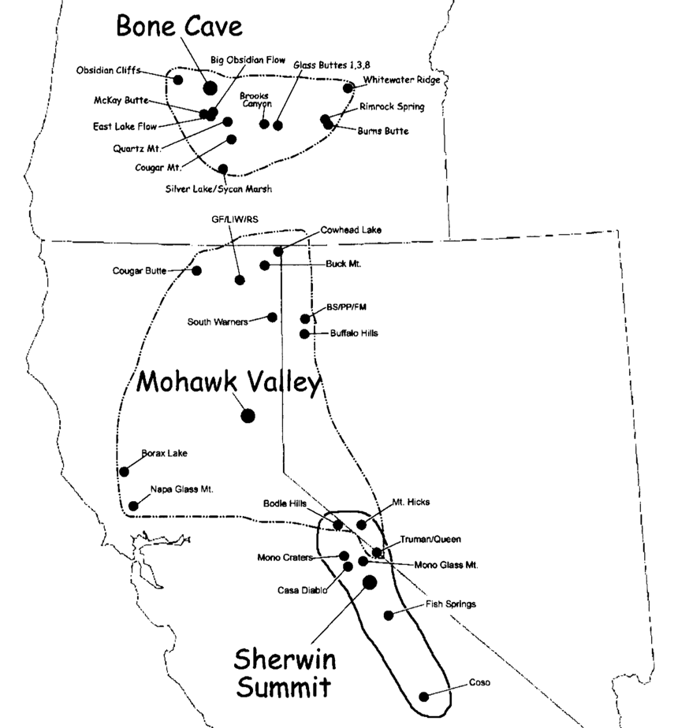

4 Cleaning data
A few common data-cleaning tasks:
- adding and removing columns
- converting character columns to factors
We’ll do these the tidyverse [🙄] way, using pipes (%>%), since we’re going to use the dplyr package and most of the examples you’ll find in the wild do so. Note that even using pipes, if you don’t write the result to an object (often overwriting the one that you feed into the pipe), it will be ephemeral. So, drennan6.1b <- drennan6.1b %>% is more likely to be useful than just drennan6.1b %>%.
4.1 Column/variable management
4.1.1 Removing columns with select()
Unless we’ve specified which cells we want with the range = argument when reading in the sheet, Table 6.1b has some extraneous columns produced because R detected text outside of the first four and expanded the range accordingly.
## # A tibble: 140 × 4
## Site Unit Incised Unincised
## <chr> <chr> <dbl> <dbl>
## 1 Oak Grove OG-29 31 86
## 2 Maple Knoll MK-13 21 81
## 3 Cypress Swamp CS-40 43 84
## 4 Cypress Swamp CS-38 35 97
## 5 Cypress Swamp CS-12 29 87
## 6 Cypress Swamp CS-37 17 96
## 7 Cypress Swamp CS-19 37 115
## 8 Oak Grove OG-42 39 111
## 9 Oak Grove OG-4 25 101
## 10 Maple Knoll MK-26 14 94
## # ℹ 130 more rows4.1.2 Changing column classes and adding columns with mutate()
The mutate() function can be used to modify existing columns by simply overwriting them.
## # A tibble: 140 × 4
## Site Unit Incised Unincised
## <fct> <fct> <dbl> <dbl>
## 1 Oak Grove OG-29 31 86
## 2 Maple Knoll MK-13 21 81
## 3 Cypress Swamp CS-40 43 84
## 4 Cypress Swamp CS-38 35 97
## 5 Cypress Swamp CS-12 29 87
## 6 Cypress Swamp CS-37 17 96
## 7 Cypress Swamp CS-19 37 115
## 8 Oak Grove OG-42 39 111
## 9 Oak Grove OG-4 25 101
## 10 Maple Knoll MK-26 14 94
## # ℹ 130 more rows#or, more efficiently where multiple columns are involved
drennan6.1b <- drennan6.1b %>% mutate(across(Site:Unit, as.factor))Mutate can also be used to create new columns, as assigning to $ would (but remember that piping is ephemeral if you’re not writing to an object).
4.2 Putting it into practice
Now that you have seen how this works, let’s tidy up the Eerkens et al. tables so that we can use them. Looking at them, we’ll need to:
- make sure that no-data values are
NA, - correct typos,
- rename columns, making sure that they match between tables,
- remove marginal totals,
- add a ‘Site’ column, and
- make sure that column classes are as we’d like.
Below I’ll do this with Eerkens et al. 2007 Table 1; you’ll need to do the equivalent with Table 2 and Table 3 so that we can combine all three.
We’ll start by defining the no-data values. I find the dplyr syntax here a bit opaque…but it’s undeniably effective.
## # A tibble: 5 × 10
## `Source Artifact` `Casa Diablo` `Mono GlassMtn.` Queen `Fish Springs`
## <chr> <dbl> <dbl> <dbl> <dbl>
## 1 Formal Tools 51 16 13 5
## 2 Large Flakes 166 65 10 18
## 3 Small Non-pressure Flakes 24 10 2 1
## 4 Small Pressure Flakes 7 3 7 1
## 5 Totals 248 94 32 25
## # ℹ 5 more variables: `Mono Craters` <chr>, `Bodie Hills` <chr>,
## # `Mount Hicks` <chr>, Coso <chr>, Totals <dbl>Do the same for Eerkens et al. 2007 Table 2 and Table 3.
We can “recode” to deal with typos (or any other values that we’d like to change). This used to be handled in dplyr by a function called - sensibly - recode()…but that has been replaced by one called case_match(). Although you can still use recode(), we’ll try to keep up with the times by using case_match() (case_when() also works for this).
eerk_tab1 <- eerk_tab1 %>% mutate(`Source Artifact` = case_match(`Source Artifact`,
"FormalT ools" ~ "Formal Tools",
.default = `Source Artifact`
))The other two Eerkens tables don’t seem to need any recoding, so we can move on to the column names. Looking at the data frames and/or using colnames() will make clear that there are both typos and abbreviations in the column names. The former are obviously mistakes; the latter imposed by the formatting limitations of published tables. Fortunately we can refer to the full names on the published map. Since “BS/PP/FM” and “GF/LIW/RS” are lumping multiple nearby source and the full lists (“Bordwell Spring, PintoPeak,Fox Mountain, and Hart Mountain”, and “Grasshopper Flat, Lost Iron Well, and Red Switchback”) would be clunky column names, we’ll leave them as-is.

#rename() syntax is "NewName" = "OldName"
#unlike recode(), only specified names will change
eerk_tab1 <- eerk_tab1 %>% rename("Mono Glass Mountain" = "Mono GlassMtn.",
"Truman/Queen" = "Queen")
eerk_tab2 <- eerk_tab2 %>% rename("Buffalo Hills" = "Buf. Hills",
"South Warners" = "South War.",
"BS/PP/FM" = "BS PP FM",
"GF/LIW/RS" = "GF LIW RS",
"Cowhead Lake" = "Cow. Lake",
"Cougar Butte" = "Coug Butte",
"Buck Mountain" = "Buck Mtn.",
"Napa Glass Mountain" = "Napa",
"Mount Hicks" = "Mt. Hicks",
"Truman/Queen" = "Queen"
)Do the same for Eerkens et al. 2007 Table 3.
As you’ll have noticed above, column names with punctuation can be a hassle (need to be enclosed in tickmarks []). The **janitor** package ("simple little tools for examining and cleaning dirty data") streamlines the standardization of these names (thecase=` argument controls whether you’ll get “Source Artifact”, “source_artifact”, or “SourceArtifact”, etc.).
## # A tibble: 5 × 10
## source_artifact casa_diablo mono_glass_mountain truman_queen fish_springs
## <chr> <dbl> <dbl> <dbl> <dbl>
## 1 Formal Tools 51 16 13 5
## 2 Large Flakes 166 65 10 18
## 3 Small Non-pressure … 24 10 2 1
## 4 Small Pressure Flak… 7 3 7 1
## 5 Totals 248 94 32 25
## # ℹ 5 more variables: mono_craters <chr>, bodie_hills <chr>, mount_hicks <chr>,
## # coso <chr>, totals <dbl>Do the same for Eerkens et al. 2007 Table 2 and Table 3.
The tables have row and column totals included, but since we’re going to combine them these will just get in the way. We already used select() to remove columns using dplyr (and you can do so just as easily by indexing using [); we can also use the filter() function to remove rows.
## # A tibble: 5 × 9
## source_artifact casa_diablo mono_glass_mountain truman_queen fish_springs
## <chr> <dbl> <dbl> <dbl> <dbl>
## 1 Formal Tools 51 16 13 5
## 2 Large Flakes 166 65 10 18
## 3 Small Non-pressure … 24 10 2 1
## 4 Small Pressure Flak… 7 3 7 1
## 5 Totals 248 94 32 25
## # ℹ 4 more variables: mono_craters <chr>, bodie_hills <chr>, mount_hicks <chr>,
## # coso <chr>## # A tibble: 4 × 10
## source_artifact casa_diablo mono_glass_mountain truman_queen fish_springs
## <chr> <dbl> <dbl> <dbl> <dbl>
## 1 Formal Tools 51 16 13 5
## 2 Large Flakes 166 65 10 18
## 3 Small Non-pressure … 24 10 2 1
## 4 Small Pressure Flak… 7 3 7 1
## # ℹ 5 more variables: mono_craters <chr>, bodie_hills <chr>, mount_hicks <chr>,
## # coso <chr>, totals <dbl>#or chain those together with pipes
eerk_tab1 <- eerk_tab1 %>% select(-totals) %>% filter(source_artifact != "Totals")Do the same for Eerkens et al. 2007 Table 2 and Table 3.
Each of the three tables contains information from a separate site, but the site name is in the table caption, not included as a variable. We can add an populate a column in dplyr using mutate().
Do the same for Eerkens et al. 2007 Table 2 and Table 3.
We can also use mutate() to alter column classes. We want to make sure, in particular, that our counts are ‘numeric’ rather than ‘character’ variables (read_csv() is likely to have guessed the to be character variables if it found anything non-numeric in them). We can do this efficiently by combining across() with mutate(). Referring to column names in code makes clear how useful janitor’s clean_names() function is (and how convenient “snake” case is for lazy typists).
Do the same for Eerkens et al. 2007 Table 2 and Table 3.
We might also want to turn some of our character variables into factors, but if we plan to combine the tables it’s usually safest to do that after combining.